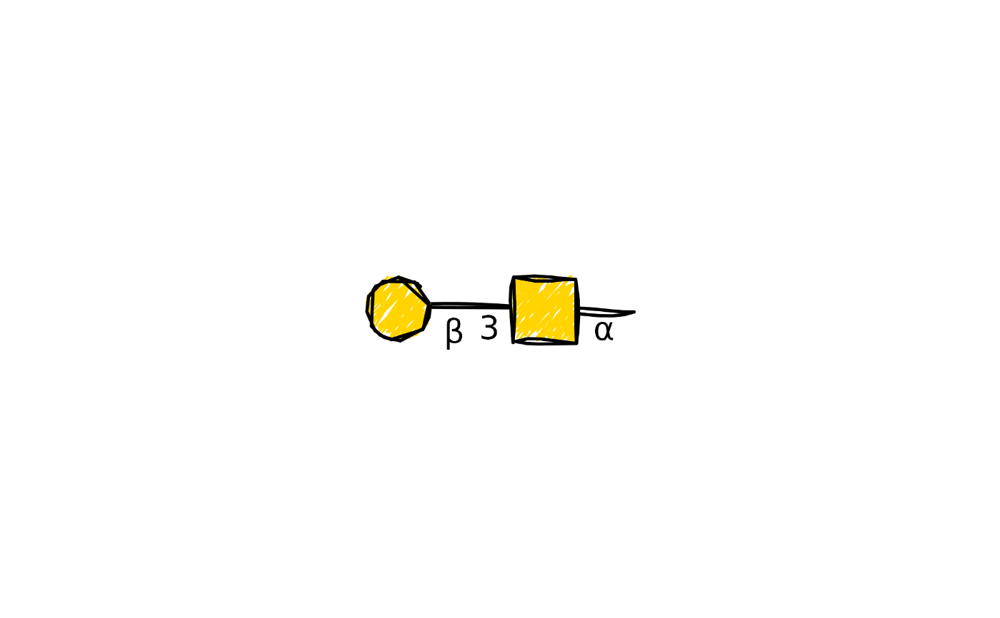

draw_cartoon_sketch() uses ggsketch::ggsketch-package geoms to give a
glycan cartoon hand-drawn strokes and patterned residue fills. Its glycan
layout, annotations, orientation, and sizing are otherwise identical to
draw_cartoon().
Usage
draw_cartoon_sketch(
structure,
...,
show_linkage = TRUE,
orient = c("left", "right", "up", "down"),
highlight = NULL,
style = style_glydraw(),
roughness = 1,
bowing = 1,
n_passes = 2L,
seed = NULL,
fill_style = "pencil_shade",
hachure_angle = 45,
hachure_gap = 0.03,
fill_weight = 0.5,
medium = NULL,
red_end = NULL
)Arguments
- structure
A
glyrepr::glycan_structure()scalar, or a string of any glycan structure text nomenclatures supported byglyparse::auto_parse().- ...
Ignored.
- show_linkage
Show glycosidic linkage annotations or not. Defaults to
TRUE. Substituent annotations are always shown.- orient
Direction in which the glycan extends from its reducing end: one of
"left","right","up", or"down". Defaults to"left".- highlight
An integer vector specifying the node indices to highlight. This argument is applicable only when
structureis aglyrepr::glycan_structure(). Note that for aglyrepr::glycan_structure(), the node indices correspond exactly to the monosaccharides in its printed IUPAC nomenclature. For example, givenglyrepr::as_glycan_structure("Gal(b1-3)[GlcNAc(b1-6)]GalNAc(a1-"), settinghighlight = c(1, 3)will highlight the "Gal" and "GalNAc" nodes.- style
A
style_glydraw()object that controls the cartoon's visual appearance.- roughness
Non-negative roughness of the hand-drawn strokes. Zero produces straight strokes. Hex circle outlines are automatically softened to keep their curved borders smooth.
- bowing
Non-negative multiplier controlling how much strokes bow.
- n_passes
Number of times each sketch stroke is drawn.
- seed
An optional integer seed for reproducible sketch strokes. When
NULL,ggsketchusesgetOption("ggsketch.seed", 1L).- fill_style
Residue fill pattern. Defaults to
"pencil_shade". Seeggsketch::geom_sketch_polygon()for the available styles.- hachure_angle
Angle of patterned fill lines in degrees.
- hachure_gap
Gap between patterned fill lines as a proportion of the node diameter. Defaults to
0.03.- fill_weight
Stroke weight of patterned fill lines.
- medium
Optional drawing medium for linkage and reducing-end strokes. See
ggsketch::sketch_media()for the available media.- red_end
Reducing-end annotation.
NULL, the default, usesred_endfromstyle. A non-NULLvalue overridesstyle$red_end. Ignored whenstyle$red_end_lengthis0. To annotate an amino-acid sequence, tag its single glycosite as, for example,"ABC<site>D</site>EFG".
Details
Sketch cartoons always use a handwriting font, ignoring font_family in
style. They prefer an installed sketch-style font that contains Greek
alpha, Greek beta, and decimal digits so all linkage labels use one font.
Examples
if (requireNamespace("ggsketch", quietly = TRUE)) {
draw_cartoon_sketch("Gal(b1-3)GalNAc(a1-", seed = 1)
}
